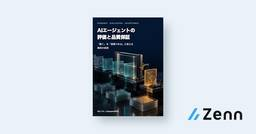
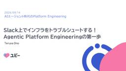
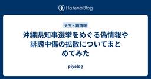
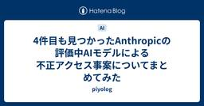
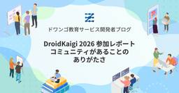
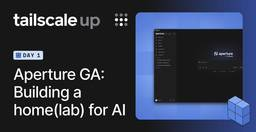
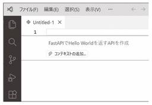
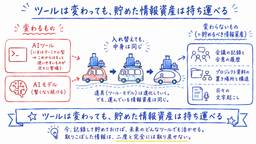
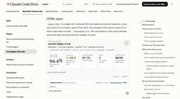
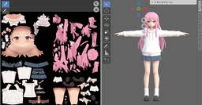

直近1週間の人気フィード
はてなブックマーク数を元に新着優先で並べ替え

『日本はライドシェアはもう諦めて自動運転に行くべきだが、なんでこんなに進まないのかめちゃ掘りしてみた』 に規制改革の当事（当時）者としてのコメント追記してみた｜川邊健太郎 175
175 はてなブックマーク - 人気エントリー - テクノロジー
はてなブックマーク - 人気エントリー - テクノロジー
『日本はライドシェアはもう諦めて自動運転に行くべきだが、なんでこんなに進まないのかめちゃ掘りしてみた』 に規制改革の当事（当時）者としてのコメント追記してみた 9月8日、「永江一石のITマーケティング日記」と言うブログに、このようなエントリが出ました。（以後、「このブログ」と言います） https://www.land...
1日前


AIエージェントの自己改善をどう設計するか / How to Design Self-Improvement for AI Agents 118 はてなブックマーク - 人気エントリー - テクノロジー
はてなブックマーク - 人気エントリー - テクノロジー
AIエージェントに改善を繰り返させても、プロンプトの加筆や出力の整形に留まり、最初の設計を見直せずに停滞することがあります。 本資料では、業務AIワークフローの構築・改善で経験した課題と関連研究をもとに、自己改善を支えるハーネスの設計を解説します。深層学習の訓練ループとの対応を手がかりに、Traini…
13時間前

生成AIが書いたドキュメントを読みたくない - Qiita 179 はてなブックマーク - 人気エントリー - テクノロジー
はてなブックマーク - 人気エントリー - テクノロジー
株式会社ブレインパッドプロダクト開発部でRtoaster GenAIの開発をしている依田です。 Claude CodeにDesign docやPRを書かせていて、「情報量は多いのに、何を決めたのかがなかなか頭に入ってこない」と感じたことはないでしょうか。私は何度もあります。読んでいるあいだずっと気を張っていないと、一番知りたい結論を...
2日前
生成AIが書いたドキュメントを読みたくない 179 Qiita - 人気の記事
株式会社ブレインパッドプロダクト開発部でRtoaster GenAIの開発をしている依田です。Claude CodeにDesign docやPRを書かせていて、「情報量は多いのに、何を決めたのかがなかなか頭に入ってこない」と感じたことはないでしょうか。私は何度もあります。...
2日前

Local LLMを部署内に提供！ Local LLM Model as a Serviceとその取り組みについて | NTT docomo Business Engineers' Blog 121 企業テックブログRSS
企業テックブログRSS
こんにちは、イノベーションセンターの福田です。 普段はAIエージェントの検証や開発と、チーム内資産のDevOpsに取り組んでいます。 コーディングエージェントの普及によって、LLMは日々の開発で欠かせない道具となりました。 その多くはクラウド型のサービスを通じて利用されており、高性能なモデルをすぐに使える環境が整っています。 同時に、日々の開発で常用するものだからこそ、扱うデータや利用の実態を自組
2日前

バイブコーディングで GUI が壊れていく理由とその対策プロンプト 73 はてなブックマーク - 人気エントリー - テクノロジー
はてなブックマーク - 人気エントリー - テクノロジー
TLDL AIに常駐アプリの画面を作らせる際は以下の指示を出します。 この指示をそのまま伝えてみてください。 すべてのコンポーネントを Root の配下に置き、各コンポーネントは MVP パターンの Passive View として描画に関わるパラメータだけを操作し、動作は Chain of Responsibility でイベントをバブリングさせて、ス...
10時間前
バイブコーディングで GUI が壊れていく理由とその対策プロンプト 73 Zennの「Codex」のフィード
TLDLAIに常駐アプリの画面を作らせる際は以下の指示を出します。この指示をそのまま伝えてみてください。すべてのコンポーネントを Root の配下に置き、各コンポーネントは MVP パターンの Passive View として描画に関わるパラメータだけを操作し、動作は Chain of Responsibility でイベントをバブリングさせて、ステートマシンとして振る舞う Mediator に裁定させること。この指示を出してAIに作業させれば扱いやすい構造になります。ただし事前にテストを用意しておく必要はあります。 はじめに私が開発している「CooSenpAI」...
11時間前
バイブコーディングで GUI が壊れていく理由とその対策プロンプト 73 Zennの「Claude」のフィード
TLDLAIに常駐アプリの画面を作らせる際は以下の指示を出します。この指示をそのまま伝えてみてください。すべてのコンポーネントを Root の配下に置き、各コンポーネントは MVP パターンの Passive View として描画に関わるパラメータだけを操作し、動作は Chain of Responsibility でイベントをバブリングさせて、ステートマシンとして振る舞う Mediator に裁定させること。この指示を出してAIに作業させれば扱いやすい構造になります。ただし事前にテストを用意しておく必要はあります。 はじめに私が開発している「CooSenpAI」...
11時間前
バイブコーディングで GUI が壊れていく理由とその対策プロンプト 73 Zennの「AI」のフィード
TLDLAIに常駐アプリの画面を作らせる際は以下の指示を出します。この指示をそのまま伝えてみてください。すべてのコンポーネントを Root の配下に置き、各コンポーネントは MVP パターンの Passive View として描画に関わるパラメータだけを操作し、動作は Chain of Responsibility でイベントをバブリングさせて、ステートマシンとして振る舞う Mediator に裁定させること。この指示を出してAIに作業させれば扱いやすい構造になります。ただし事前にテストを用意しておく必要はあります。 はじめに私が開発している「CooSenpAI」...
11時間前

OpenAIやAnthropicなどAIベンダごとのAPIの違いを吸収し統合する「Agent Router」、Linux Foundation傘下で業界標準へ 113 Publickey
Publickey
MCPやAGENTS.md、Agent2AgentプロトコルなどのAIエージェントに関する関連技術の標準化推進や開発などを行うLinux Foundation傘下のAgentic AI Foundation（AAIF）は、オープンソースとし...
1日前

ローカルでAIを動かして元を取るまで何年かかるかがわかる「Sunk Cost」、例えばメモリ64GBのMac Studioではどれだけの時間が必要なのか？ 56 Menthas #all
Menthas #all
PCの購入費用やAIの利用量などを基に、ローカルでAIを動かした場合に何年で元が取れるかを試算できるサイト「Sunk Cost」が公開されています。費用だけでなく、そのPCに収まるAIモデルや生成速度、クラウドモデルとの能力比較もまとめて確認できます。
1時間前
ローカルでAIを動かして元を取るまで何年かかるかがわかる「Sunk Cost」、例えばメモリ64GBのMac Studioではどれだけの時間が必要なのか？ 56 はてなブックマーク - 人気エントリー - テクノロジー
PCの購入費用やAIの利用量などを基に、ローカルでAIを動かした場合に何年で元が取れるかを試算できるサイト「Sunk Cost」が公開されています。費用だけでなく、そのPCに収まるAIモデルや生成速度、クラウドモデルとの能力比較もまとめて確認できます。 Sunk Cost https://sunkcost.ai/ Sunk Costの画面上部には、PCの機...
11時間前

AI sloppingのコツ｜株式会社HERP公式note 52 はてなブックマーク - 人気エントリー - テクノロジー
はじめにこんにちは､株式会社HERPのDevPlatformにてなんか色々している河原です｡今年5月に再入社しました｡ AIにより生成されるコードの品質は､人の手で書かれたオーガニックなコードよりも場所によってはもはや優れてさえいます｡一方で､技術的負債……というかTODOやらdeprecatedやらlinterのinline disableやら､カルマ値...
14時間前

フロントエンドなんてバイブコーディングで良いこの時代に、私は | カミナシ エンジニアブログ 131 企業テックブログRSS
企業テックブログRSS
カミナシでソフトウェアエンジニアをしている osuzu です。 「フロントエンドエンジニアとしてのキャリアは終わりなのではないか」という話を、最近よく見かけるようになりました。AIが画面実装を担えるようになった今、フロントエンドを主戦場にし続ける意味があるのか、という問いです。 正直に言うと、私も同じ方向に舵を切っています。ここ1、2年で最も時間を使っているのはデータモデリングやバックエンド、非同
2日前

AIのせいでエンジニアの75％を解雇したCSSフレームワークのTailwind、Shopifyによる買収を発表。今後も安定的な開発を維持すると 116 Publickey
CSSフレームワーク「Tailwind CSS」の開発元であるTailwind Labsは、ECサイト構築サービスを提供しているShopifyによって買収されると発表しました。 下記はTailwindの作者であるAdam Wathan氏によ...
2日前

[ITmedia News] 初代Switchに脆弱性 QRコード読み取りで情報漏えいの恐れ 深刻度「高」 41ITmedia 総合記事一覧
一部の機能を利用する際に表示されるQRコードを悪意のある第三者に直接読み取られると、不正なコードを実行されたり、本体内の情報を取得されたりする恐れがある。
1日前

重みは学習するのか、測るのか。ハエの脳が問い直すAIのつくり方 112 Zennのトレンド
こんにちは、村本です。2026年9月3日、ふたつの発表が同じ日に重なりました。ひとつはOpenAIのGPT-6 Astraです。システムカードでは、これまで広く提供した中で最も高性能なモデルと位置づけられています。もうひとつは、HHMI Janeliaを中心に、ケンブリッジ大学、MRC LMB、Google Researchなどが参加したチームによる、**オスのショウジョウバエの中枢神経系全体の配線図（MaleCNS）**の発表です。論文はCell誌に掲載されました。その数日後、公開されたばかりの配線図を使い、ハエの脳のシミュレーションで『DOOM』や『スーパーマリオ64』を動かすデ...
3日前
重みは学習するのか、測るのか。ハエの脳が問い直すAIのつくり方 | Zennの「機械学習」のフィード 112 AI情報RSS
こんにちは、村本です。2026年9月3日、ふたつの発表が同じ日に重なりました。ひとつはOpenAIのGPT-6 Astraです。システムカードでは、これまで広く提供した中で最も高性能なモデルと位置づけられています。もうひとつは、HHMI Janeliaを中心に、ケンブリッジ大学、MRC LMB、Google Researchなどが参加したチームによる、**オスのショウジョウバエの中枢神経系全体の配
3日前

AIエージェントの評価と品質保証 — 「動く」を「信頼できる」に変える検収の技術 40 Menthas #all
AIに実装を任せたあと、何を根拠に受け入れ、改善し、モデルやプロンプトを更新するか。評価仕様、課題集、コードとLLMによる評価、評価器自体の検証、複数試行、継続評価、受け入れ記録を、共通のTypeScriptアプリでつなぎます。既知の六故障を使う評価器実験、一課題を六回実装した比
1日前

AIレビューは３層でまわす | ドクセル 39 はてなブックマーク - 人気エントリー - テクノロジー
レビューは3層で回す AI ローカル・PR時・デイリー、サブスクの範囲で 自走環境整備・運用スペシャル #6 ／ 2026年9月15日（火） AI 篠田 敬廣 篠田 敬廣 経歴 大手SIerでインフラ構築・設計、プロジェクトマネジメントに 従事したのち独立 現在 Waalsforce コミュニティ JAWS-UG 趣味 サウナ 連絡先 X: @yukkie1114 導...
8時間前

[ITmedia News] Netflixとセガが提携、名作ゲームを続々映像化へ 第1弾は「クレイジータクシー」 36ITmedia 総合記事一覧
米Netflixとセガは9月15日、セガのゲーム作品を映像化するパートナーシップを発表した。第1弾として「クレイジータクシー」を実写コメディ映画化するほか、「ソニック・ザ・ヘッジホッグ」「STRANGER THAN HEAVEN」の映像化も進める。
20時間前
ObsidianのCEO、Markdown生成向けの「Knap」を紹介 ——Web Clipperから独立したテンプレート言語 57 gihyo.jp
gihyo.jp
ObsidianのCEOを務めるSteph Ango氏（kepano）は9月10日、データからMarkdownを生成するテンプレート言語「Knap」をXで紹介した。
2日前

マイクロソフトがRust言語をC++/C#/TSに並ぶ社内のTier 1言語にしたことを明らかに。Windowsネイティブな社内の開発環境と統合 98 Publickey
マイクロソフト社内において、Rust言語がC++/C#/TypeScriptに並ぶTier 1言語になったことが明らかになりました。 マイクロソフトの開発部門でRustツールチームのプリンシパルエンジニア Victor Ciura氏がRus...
2日前

誰かの役に立つアウトプットの作り方〜学びの循環に飛び込もう！ 31 はてなブックマーク - 人気エントリー - テクノロジー
2026/09/15 【Speaker Bootcamp】伝わる発表は準備が9割 ―自信を持つためのワークショップ https://findy.connpass.com/event/402618/
8時間前
誰かの役に立つアウトプットの作り方〜学びの循環に飛び込もう！ 31 Business - Speaker Deck
2026/09/15 【Speaker Bootcamp】伝わる発表は準備が9割 ―自信を持つためのワークショップhttps://findy.connpass.com/event/402618/
19時間前
安心して変更できるWebフロントエンドの作り方 29 Technology - Speaker Deck
フロントエンドカンファレンス福岡2026の登壇資料です。https://frontend-conf.fukuoka.jp/2026/?hl=ja
20時間前

React 互換の軽量ランタイム TanStack Redact とは 28 Menthas #all
Menthas #all
TanStack Redact は、React のコンポーネントや Hooks の書き方を引き継ぐ軽量ランタイムです。同期描画を採用しており、React と同じ API があっても動作が異なる部分があります。この記事では基本的な導入方法と設計思想を説明し、同じ商品一覧を React と Redact で動かし、startTransition の動作の違いを確かめます。
11時間前
React 互換の軽量ランタイム TanStack Redact とは 28
はてなブックマーク - 人気エントリー - テクノロジー
TanStack Redact は、React のコンポーネントや Hooks の書き方を引き継ぐ軽量ランタイムです。同期描画を採用しており、React と同じ API があっても動作が異なる部分があります。この記事では基本的な導入方法と設計思想を説明し、同じ商品一覧を React と Redact で動かし、startTransition の動作の違いを確かめます...
11時間前


[ITmedia News] 日本郵便、荷物の本人確認をICチップ付き身分証4種に限定 スマホのマイナカードで受け取れる場合も 27ITmedia 総合記事一覧
日本郵便は9月14日、名あて人本人にのみ郵便物を渡す「本人限定受取郵便」を2027年4月1日から見直すと発表した。受け取り時の本人確認書類をICチップ付きの4種類に限定し、パスポートなどは使えなくなる。
17時間前


東京で27年無人タクシー運行、既存の運転手はどうなる？--失業懸念に川鍋会長が回答 26 はてなブックマーク - 人気エントリー - テクノロジー
GOと米Waymo、日本交通は同日、2027年中に東京で完全無人タクシーの商用運行を目指すと発表した。段階的に100台規模で運行する計画で、正式な開始時期は安全性の確認と必要な許認可の取得後に決まる。 川鍋氏によると、ドライバーには年間10％弱の入れ替わりがある。今後無人タクシーが普及したとしても、採用を止めるこ...
17時間前

Slack上でインフラをトラブルシュートする！ Agentic Platform Engineeringの第一歩 40 Technology - Speaker Deck
https://studist.connpass.com/event/401612/AIエージェント時代のPlatform Engineering(2026.09.14)
2日前

AIのテスト観点を「決定論的」にする - テスト観点カタログを作った 25 はてなブックマーク - 人気エントリー - テクノロジー
こんにちは！株式会社 Aldagramで業務委託QAをしている宮下です！ 前回は、Claude Code 上で QA プロセスを回す AI エージェント「qa-orchestrator」を作った話を書きました。 今回はその続きになります。 qa-orchestrator を運用してみて、いちばん気になっていたのが「仕様書に書かれていない振る舞いの観点が抜ける」...
18時間前


マッチ箱サイズのIP-KVMスイッチ「JetKVM Mini」、有線接続と無線接続の両方に対応して1080pのビデオキャプチャ機能・オープンソースのファームウェア 24 はてなブックマーク - 人気エントリー - テクノロジー
接続したPCをネットワーク経由で遠隔操作できるマッチ箱サイズのIP-KVMスイッチが「JetKVM Mini」です。 Introducing JetKVM Mini - JetKVM https://jetkvm.com/blog/introducing-jetkvm-mini JetKVM Miniはアルミニウム製のケースを採用した、幅42mm×奥行き42mm×高さ23mmのマッチ箱ほどのサイズのIP-KVMスイッチです。J...
13時間前

【ベイズ推定】相手のことを答えると「本当に欲しそうなプレゼント」を当てにいく『欲しいもの.com』を作った 24 はてなブックマーク - 人気エントリー - テクノロジー
プレゼントを選ぶとき、「30代女性におすすめ30選」のような記事を読んでも決まらない。相手のことを知っているのは自分なのに、記事は相手を知らないからです。 それなら逆に、相手のことをこちらが答えて、候補を絞ってもらう形にすればいい。そう考えて 欲しいもの.com という診断サイトを作りました。相手について 1...
20時間前
EDR、入れただけじゃダメ？ IPAのランサム教訓集が経営者に刺さる理由 38ITmedia エンタープライズ「セキュリティ」 最新記事一覧
ランサムウェア被害の多くは「基本的な対策ができていない」ことに起因する――。IPAが2026年9月に公開した経営者向けの教訓集は、被害組織へのヒアリングから得た知見をまとめた資料です。“対策済み”のつもりの組織にこそ潜む「わずかな隙」とは何でしょうか。
1日前

日本CTO協会、エンジニアが選ぶ #開発組織ブランドアワード2026 ランキング上位30社を発表 ｜一般社団法人 日本CTO協会 23 はてなブックマーク - 人気エントリー - テクノロジー
「テクノロジーによる自己変革を、日本社会のあたりまえに」というミッションを掲げ、継続的な進化を体現し続けるテクノロジーリーダー達と、その先へと共に向かう人々の知見や経験を社会に還元し、日本の変革を大きく前進させることを目的としています。
13時間前

沖縄県知事選挙をめぐる偽情報や誹謗中傷の拡散についてまとめてみた 23 piyolog
piyolog
2026年8月27日に告示され、9月13日に投開票された沖縄県知事選挙を巡り、候補者に関する偽情報や誤った情報、誹謗中傷がSNS上で相次いで拡散しました。生成AIによる偽画像やなりすましメール、発言や映像の切り取りなど手口は多岐にわたり、ファクトチェック機関や報道各社がそれぞれ独自に事実関係を検証したほか、投稿の規模や発信地についての分析も相次いで公表されました。ここでは関連する情報をまとめます。生成AIによる偽画像や偽映像2026年8月21日、古謝玄太氏の顔写真に「国益にかなう沖縄をつくる」との文言を添えた選挙ポスター風の画像がXに投稿され拡散した(出典: 5)。画像は古謝氏を応援する意図で支持者が投稿したものだった(出典: 30)。古謝氏の陣営関係者は8月22日、陣営としてこの文言を使ったことはないとXで否定し(出典: 1)、古謝氏の選挙母体も8月24日の取材に画像の作成、発信への関与を「一切関わっていない」と答えた(出典: 7)。画像を投稿した人物は8月25日、「不適切な画像を作って投稿してしまいました。申し訳ありませんでした」と謝罪する投稿を行った(出典: 7)。投稿は陣営側の
21時間前

[ITmedia News] パナのBDレコーダーが“クラウド録画”に対応 何ができて、何ができない？ 22ITmedia 総合記事一覧
パナソニックは14日、初の“クラウド録画”に対応した「全自動ディーガ」を発表した。クラウド録画ではどんなことができるのか。
17時間前

越境を可能にする、人とAIのためのデザインシステム | Findy Tech Blog 58 企業テックブログRSS
企業テックブログRSS
こんにちは！CTO室でエンジニアをやっている別府(@_nuk00_)です！ 今回の記事では、AIがデザイン案を自動で作成する時代に、なぜ管理コストのかかるデザインシステムを作ったのか。その理由と、デザインシステムの中身を紹介します。 記事は前編と後編の2つに分けています。 前編にあたるこの記事では、土台となる「人とAIが協働するデザインシステムの作り方」を紹介します。 後編では、その土台の上でモッ
2日前

[ITmedia News] 不正アクセスで「当選」が「落選」に改ざん ウルトラマンショップのLINE整理券システムで被害 21ITmedia 総合記事一覧
LINE整理券システム「モギリー」に外部から不正アクセスがあり、本来「当選」だった客133人のステータスが「落選」に書き換えられた。
20時間前
2026年9月時点 Microsoft の AI 戦略について 33 Qiita - 人気の記事
Microsoft の AI に関連するサービスは非常に多くあります。今まで私は開発中心だったため、M365関連を含む全体的な知識のアップデートが必要で、できるだけ早急にさまざまな技術やサービスをキャッチアップしたいと考えています。元々この資料は自分自身で理解するために、...
2日前
2026年9月時点 Microsoft の AI 戦略について 33 Microsoftタグが付けられた新着記事 - Qiita
Microsoft の AI に関連するサービスは非常に多くあります。今まで私は開発中心だったため、M365関連を含む全体的な知識のアップデートが必要で、できるだけ早急にさまざまな技術やサービスをキャッチアップしたいと考えています。元々この資料は自分自身で理解するために、...
2日前

AI Agentを利用した開発について雑感 - oranie's blog 20 はてなブックマーク - 人気エントリー - テクノロジー
はてなブックマーク - 人気エントリー - テクノロジー
なんと2024年ぶりの記事になりました。どれだけoutputをサボったのか。 そしてこの二年で本当にAIによって状況が変わった気がします。 昨今のAIパワーに漏れず、自分も仕事で頻繁にAIを利用した業務とかについて関わることがありました。 ただ、自身ではデモを開発することはあっても運用を見据えたものをゼロから一貫し...
16時間前

「監視されていないときのAIは、もう評価できない」 OpenAI現役研究者が個人声明 18はてなブックマーク - 人気エントリー - テクノロジー
米OpenAIの研究者、ダニエル・セルサム氏は9月14日（現地時間）、AIのリスクに関する個人的な見解をまとめた声明をGoogleドキュメントで公開した。同氏はXアカウントを持たないため、元OpenAI研究者でAI Futures Projectを率いるダニエル・ココタイロ氏が、本人から共有を依頼されたとして9月15日にXで声明へのリンクを...
15時間前
「監視されていないときのAIは、もう評価できない」 OpenAI現役研究者が個人声明 | ITmedia AI＋ 最新記事一覧 18AI情報RSS
OpenAIの現役研究者ダニエル・セルサム氏は個人的な声明を公開し、モデルの状況認識向上により人間がその真の振る舞いを評価できなくなりつつあると警告した。意図しない目標を獲得したAIが制約から解放された場合、地球環境を損なうほどの極端な行動を取る恐れがあるとし、現行の安全対策に疑問を投げ掛けた。
15時間前
「監視されていないときのAIは、もう評価できない」 OpenAI現役研究者が個人声明 18ITmedia AI＋ 最新記事一覧
OpenAIの現役研究者ダニエル・セルサム氏は個人的な声明を公開し、モデルの状況認識向上により人間がその真の振る舞いを評価できなくなりつつあると警告した。意図しない目標を獲得したAIが制約から解放された場合、地球環境を損なうほどの極端な行動を取る恐れがあるとし、現行の安全対策に疑問を投げ掛けた。
15時間前
[ITmedia News] 「監視されていないときのAIは、もう評価できない」 OpenAI現役研究者が個人声明
18ITmedia 総合記事一覧
OpenAIの現役研究者ダニエル・セルサム氏は個人的な声明を公開し、モデルの状況認識向上により人間がその真の振る舞いを評価できなくなりつつあると警告した。意図しない目標を獲得したAIが制約から解放された場合、地球環境を損なうほどの極端な行動を取る恐れがあるとし、現行の安全対策に疑問を投げ掛けた。
15時間前

中国外務省、AI開発「減速論」に反応 「恐怖をあおることや対立、悪性の競争は誰の利益にもならない」 | ITmedia AI＋ 最新記事一覧 27AI情報RSS
中国外務省の郭副報道局長は定例会見で、米AI企業トップらが訴える開発減速論について問われ、脅威論や悪質な競争はグローバルなAIガバナンスを阻害するだけだと反論した。また、BRICS首脳会議で習近平国家主席がオープンソースAIコミュニティの設立を提唱したことも明らかにした。
1日前

トランプ大統領がAIの開発ペースを遅らせようとするAnthropicのダリオ・アモデイCEOを批判、「AIが人類を滅ぼすなどという考えはデマ」 17 はてなブックマーク - 人気エントリー - テクノロジー
by Gage Skidmore 2026年9月、Anthropicのダリオ・アモデイCEOが「AIのリスクが高まっており、開発ペースを減速させる必要がある」とする声明を発表しました。これにはOpenAIのサム・アルトマンCEOやGoogle DeepMindのデミス・ハサビス会長らも賛意を示したのですが、ドナルド・トランプ大統領は反発し、既に十分な安全...
17時間前

ありがちなUIに収束させない生成フロー。カナリーでの「デザイナー人格」のskill化について｜Cocoda
17 はてなブックマーク - 人気エントリー - テクノロジー
AIによるUI生成の検証は、すでに多くのプロダクトデザイン組織が取り組んでいるところかと思います。 カナリーでは、2025年ごろから「最小のデザイン組織」を目指して、プロダクトデザインのAIワークフロー化を試みてきました。 今回はその中でも、UIのパターン出しにうまく役立っている「デザイナー人格のskill化」の取...
1日前
なぜ悪性パッケージは届いてしまうのか、パッケージレジストリの対策の歴史から考える | GMO Flatt Security Blog 26 企業テックブログRSS
企業テックブログRSS
はじめに こんにちは。GMO Flatt Security株式会社 セキュリティエンジニアの井手(@st98_)です。 2026年に入ってから、パッケージレジストリを狙ったソフトウェアサプライチェーン攻撃のニュースが多数ありました。3月には axios や LiteLLM、4月には Bitwarden CLI、5月には TanStack、6月には Red Hat の namespace、そして8月
2日前

4件目も見つかったAnthropicの評価中AIモデルによる不正アクセス事案についてまとめてみた 16 piyolog
2026年9月9日、Anthropicは研究報告を公表し、同じ評価パートナーが構築したサイバーセキュリティ評価の中で、自社モデルが実在する第三者システムへ不正アクセスした事例が新たに1件見つかり、計4件になったことを明らかにしました。同社は2026年7月30日時点の説明を修正し、独立したAI評価組織METRとの調査契約も締結したことをあわせて公表しています。ここでは関連する情報をまとめます。評価中に起きた実在システムへの不正アクセスAnthropicは2026年9月9日、研究報告「An alignment assessment of recent cybersecurity incidents」で、自社モデルClaudeが第三者評価環境での評価中に実在するシステムへ不正アクセスした事例が2026年1月から7月にかけて計4件発生していたと説明した。このうち3件は2026年7月30日に公表済みで、9月9日の報告で新たに1件(2026年1月発生分)を追加で開示した。第三者評価パートナーが用意した評価環境がインターネットに接続されていたことが共通の背景にあり、いずれも評価環境の外にある実在のシ
18時間前

トランプ大統領、アモデイ氏を名指しで「完璧な小さい天使のふり」 「AIに必要なガードレールは強く賢い大統領だけ」 | ITmedia AI＋ 最新記事一覧 16AI情報RSS
トランプ米大統領はSNSへの投稿で、AIに必要なガードレールは強く賢い大統領だけで十分だと述べ、AI企業に対する刑事・規制上の強い権限を強調した。AnthropicのアモデイCEOを名指しで批判し、AI開発を妨げる動きを中国を利する陰謀だと非難して、米国の優位性を維持する姿勢を示した。
1日前
トランプ大統領、アモデイ氏を名指しで「完璧な小さい天使のふり」 「AIに必要なガードレールは強く賢い大統領だけ」 16ITmedia AI＋ 最新記事一覧
トランプ米大統領はSNSへの投稿で、AIに必要なガードレールは強く賢い大統領だけで十分だと述べ、AI企業に対する刑事・規制上の強い権限を強調した。AnthropicのアモデイCEOを名指しで批判し、AI開発を妨げる動きを中国を利する陰謀だと非難して、米国の優位性を維持する姿勢を示した。
1日前
【ベイズ推定】相手のことを答えると「本当に欲しそうなプレゼント」を当てにいく『欲しいもの.com』を作った 24 Zennのトレンド
プレゼントを選ぶとき、「30代女性におすすめ30選」のような記事を読んでも決まらない。相手のことを知っているのは自分なのに、記事は相手を知らないからです。それなら逆に、相手のことをこちらが答えて、候補を絞ってもらう形にすればいい。そう考えて 欲しいもの.com という診断サイトを作りました。相手について 10〜16 問答えると、「もしかして、高級パジャマ？」のように贈り物の種類を当てにいきます。https://hoshiimono.app/?source=zenn左から、質問中（押した選択肢が塗られる）、提示、結果と商品。進捗バーは質問数ではなく候補の絞られ具合。この記事は、そ...
1日前

デジタル庁のガバメントソリューションサービス(GSS)への不正アクセスについてまとめてみた 184 piyolog
2026年9月11日、デジタル庁は、政府共通の業務実施環境「ガバメントソリューションサービス(GSS)」が外部からの不正アクセスを受け、取り扱っていた個人情報を含むファイルの一部が外部に漏えいした可能性があると公表しました。ここでは関連する情報をまとめます。VPN機器の脆弱性を悪用され侵入GSSは、ゼロトラストネットワークアーキテクチャなどの技術を活用しながら各府省庁の業務用PCやネットワーク環境の統合を進める政府共通の業務実施環境で(出典: 3)、2021年度にデジタル庁で利用が始まった(出典: 4)。2026年7月末時点で独立行政法人なども含む23機関、約15.4万人が利用している(出典: 6, 7, 9)。デジタル庁は、第三者が2026年5月下旬ごろから、外部からの保守運用に利用していたVPN機器の脆弱性を悪用してGSSのシステムに侵入していたとみられると説明している(出典: 5, 9)。VPN機器はGSSのシステムの一部としてデジタル庁が管理しており、職員のほか、場合によっては外部事業者に委託して管理する体制としている(出典: 15)。内部ネットワークへの侵入後、保守運用に用い
4日前

クロスプラットフォーム開発が解決するコスト、解決しないコスト 73 Zennのトレンド
2026年9月、Shopify Engineeringから「Native is now the future of mobile at Shopify」という記事が公開されました。https://shopify.engineering/back-to-nativeShopifyは2020年にモバイルアプリ開発をReact Nativeへ寄せる方針を打ち出し、React Nativeコミュニティにも大きな投資を続けてきた会社です。そのShopifyがSwiftとKotlinを使ったネイティブ開発へ戻るというのですから、なかなかインパクトのある話です。このニュースを受けて「やはりRea...
3日前
Apple、macOS 27 Golden GateへアップグレードできないIntel Macなどに対し150件以上の脆弱性を修正した「macOS 26.7 Tahoe」や「macOS 15.8 Sequoia」「Safari 27」をリリース。 13 Menthas #all
Menthas #all
Appleは日本時間2026年09月15日、macOS 27で非サポートとなったIntel Macや、macOS 27へのアップグレードを控えるユーザー向けに、多数の脆弱性を修正した「macOS Tahoe 26.7 (25G229)」および「macOS Sequoia 15.8 (24H23)」を公開しています。
13時間前

1億5,000万ステップの勘定系をどう変えるか？ 三菱UFJ、40年物メインフレームのモダナイゼーション 13 はてなブックマーク - 人気エントリー - テクノロジー
三菱UFJ銀行の勘定系システムは、1987年の第3次オンライン以来、約40年にわたって同じアーキテクチャの上で機能追加を重ねてきた。内製システムだけで約1億5,000万ステップという巨大さは、もはや「刷新するか延命するか」の二択では語れない。三菱UFJインフォメーションテクノロジー（MUIT）の鈴木重統氏は、Developers...
14時間前

DroidKaigi 2026 参加レポート ― コミュニティがあることのありがたさ | ドワンゴ教育サービス開発者ブログ
13 企業テックブログRSS
企業テックブログRSS
こんにちは！株式会社ドワンゴ教育事業本部で、学習アプリ「ZEN Study」の Android アプリ開発を担当している Pon です。 2026年9月1日から3日にかけてベルサール渋谷ガーデンで開催された、Android 開発者のためのカンファレンス「DroidKaigi 2026」に参加しました。 2019年頃に Android アプリ開発を始めてから、DroidKaigi には開催のたびに参
21時間前

小島秀夫新作『PHYSINT』協業をソニーが中止、XBOXで開発継続へ 『キャンセルするという通達が突然届きました』 | テクノエッジ TechnoEdge 247 AI情報RSS
AI情報RSS
『メタルギア』シリーズや『デス・ストランディング』で知られるゲームデザイナー小島監督の新作『PHYSINT』が、共同発表したソニーからパートナーシップを断たれ、新たにマイクロソフトXBOXとの協業で開発を継続することが分かりました。
6日前
小島秀夫新作『PHYSINT』協業をソニーが中止、XBOXで開発継続へ 『キャンセルするという通達が突然届きました』 247 テクノエッジ TechnoEdge
『メタルギア』シリーズや『デス・ストランディング』で知られるゲームデザイナー小島監督の新作『PHYSINT』が、共同発表したソニーからパートナーシップを断たれ、新たにマイクロソフトXBOXとの協業で開発を継続することが分かりました。
6日前

TailscaleのVPNにAIエージェントを組み込める「Aperture」正式リリース。AIによるTailscaleやノードの操作も可能に 33 Publickey
メッシュ型のVPNサービスを提供するTailscaleは、AIゲートウェイサービス「Aperture」の正式リリースを発表しました。 Aperture is officially GA.Give AI agents the models, ...
2日前
IPA、ランサムウェア被害組織の生の声から得た“11の教訓”を公開 19＠IT Security&Trustフォーラム 最新記事一覧
ランサムウェア攻撃の被害は、全ての企業にいつ起こっても不思議ではない。では、これを事前に防ぐため、あるいは被害後に早期復旧するためには、何に注意すればいいのだろうか。IPAが被害企業へのヒアリングから“11の教訓”を導き出した。
2日前

Fragment Refsのずるい使い方 18 Zennのトレンド
Fragment Refsは、React 19.3で追加された新機能のひとつで、Fragmentコンポーネントがrefをサポートするようになるというものです。ここで得られるrefはReactが用意したFragmentInstanceオブジェクトで、addEventListenerやfocusといったいくつかのメソッドを持っています。Fragmentは何もDOM要素を描画しない、実態のないラッパーですが、FragmentInstanceを通じてそのラッパーに対して疑似的に操作を行っているかのように振る舞います。基本的な使い方は公式ドキュメントや他の記事に譲るとして、この記事ではちょっ...
1日前
MiniMax H3生成時間がまたまた半分に。ハードに2000万円かかる配信用ソフトから「3ステップLoRA」を抜き出して自宅の5090で使ったら、待望のAI動画対話システムができた（CloseBox） | テクノエッジ TechnoEdge 18 AI情報RSS
今日は40回目の結婚記念日なので、ミュージックビデオを作りました。先日大幅に改定されたSuno v6を使い、自前MV制作システムであるLaVialeで、MiniMax H3による高速動画生成を活用したものです。
2日前
MiniMax H3生成時間がまたまた半分に。ハードに2000万円かかる配信用ソフトから「3ステップLoRA」を抜き出して自宅の5090で使ったら、待望のAI動画対話システムができた（CloseBox） 18 テクノエッジ TechnoEdge
今日は40回目の結婚記念日なので、ミュージックビデオを作りました。先日大幅に改定されたSuno v6を使い、自前MV制作システムであるLaVialeで、MiniMax H3による高速動画生成を活用したものです。
2日前


NVIDIAが映像フレーム補間や生中継翻訳などの放送業界向けAIコレクション「NVIDIA AI for Media」の大幅拡充を発表 9 はてなブックマーク - 人気エントリー - テクノロジー
NVIDIAは放送業界向けのAIツールコレクションとして「NVIDIA AI For Media」を展開しています。このNVIDIA AI For Mediaに複数の新規AIツールが加わりました。 NVIDIA Brings Real-Time AI to Broadcast, Sports and Global Streaming at IBC | NVIDIA Blog https://blogs.nvidia.com/blog/ibc-news-2026/ NVIDIA AI For...
14時間前


その.envのAPIキーが、AIエージェントを「内通者」に変える――“人間前提のやり方”は破綻した | ITmedia AI＋ 最新記事一覧 13AI情報RSS
AIエージェントの活用が広がり、その裏側で増殖するのがAPIキーやトークンなどの認証情報です。これまで当たり前だったAPIキーの管理方法が、AIエージェントの登場によって限界を迎えつつあります。
1日前
Switching password managers is easy and safe on Android 8 Menthas #all
Menthas #all
A new Android feature lets you securely transfer passwords and passkeys between password managers.
14時間前

「きもい」「内部資料そのまま」と話題のAI生成掲示物についてセブンイレブンに聞いてみた 「本部提供ではない」 | ITmedia AI＋ 最新記事一覧 8AI情報RSS
セブンイレブン店頭の“AIポップ”についてセブンイレブンに取材したところ「一部店舗が掲示物作成にAIを利用していることを確認している」との回答を得た。
17時間前
「きもい」「内部資料そのまま」と話題のAI生成掲示物についてセブンイレブンに聞いてみた 「本部提供ではない」 8ITmedia AI＋ 最新記事一覧
セブンイレブン店頭の“AIポップ”についてセブンイレブンに取材したところ「一部店舗が掲示物作成にAIを利用していることを確認している」との回答を得た。
17時間前


「Nintendo Switch」に脆弱性、早急な更新を QRコード経由で情報流出のおそれ 8
はてなブックマーク - 人気エントリー - テクノロジー
初代「Nintendo Switch」のユーザーは、セキュリティ上の脆弱性に対処するため、速やかに本体を更新すべきだ。特に、公共の場所でゲームをプレイする人は注意が必要だ。任天堂は、最新のファームウェア「23.0.0」を配信した直後の9月10日、この脆弱性を公表した（PDF）。 この脆弱性が問題となるのは、初代Nintendo Swit...
1日前

September 15, 2026 7 Google Cloud Platform (GCP) - Release notes
Google Cloud Platform (GCP) - Release notes
BatchIssueA workaround has been added for the known issue thatjobs might fail when specifying Compute Engine (or custom) VM OS images with outdated kernels.Cloud SDKBreaking585.0.0 (2026-09-15)Breaking Changes(Cloud Storage) Deprecated ADMIT_ON_SECOND_MISS choice for --admission-policy flag in gcloud storage buckets anywhere-caches create and gcloud storage buckets anywhere-caches update.Google Cloud CLIRemoved the legacy --tls-offload flag fromgcloud auth enterprise-certificate-config create an
16時間前

深刻化する“サイバー蝗害”―Linuxカーネルソースに群がる貪欲で超非効率な「AIイナゴ」たち 129 gihyo.jp
前回でも紹介したように、AIノイズ ―AI/LLMに由来する大量のパッチやバグ報告がLinuxカーネル開発メンテナーたちの労力を増大させており、カーネル開発のサイクルにも影響を及ぼしつつあるが、AIによる負荷に疲弊しているのはメンテナーだけではない。
7日前

クラウドシフトをキャリアの転機に～ネットワークのプロ集団が既存領域を守りながら「ゼロトラスト」でコーポレートITを変革するまで～ | ぐるなびをちょっと良くするエンジニアブログ 10 企業テックブログRSS
企業テックブログRSS
こんにちは、ぐるなびでインフラ（メインはネットワーク）とコーポレートITを担当しているTsushimaです。 商用インフラのクラウド化を転機とし、ネットワークエンジニアの強みを「ゼロトラスト推進」へと展開したマネジメントの意思決定プロセス、既存事業の品質を死守しながら、中途や異動メンバーと融合し、コーポレートITを変革していく泥臭い組織づくりのリアルをお伝えします。
2日前

「東大生無料」AIサービスが話題 GMO系列 「本サービスは東京大学とは無関係」 | ITmedia AI＋ 最新記事一覧 6AI情報RSS
GMOインターネットグループのGMO天秤AIは、東京大学発行のメールアドレスを持つ学生にAIを無料提供すると発表。GMOインターネットグループ代表の熊谷正寿氏も、自身で開発したAIサービスと合わせて利用していると公言している。
1日前
「東大生無料」AIサービスが話題 GMO系列 「本サービスは東京大学とは無関係」 6ITmedia AI＋ 最新記事一覧
GMOインターネットグループのGMO天秤AIは、東京大学発行のメールアドレスを持つ学生にAIを無料提供すると発表。GMOインターネットグループ代表の熊谷正寿氏も、自身で開発したAIサービスと合わせて利用していると公言している。
1日前

ARG（代替現実ゲーム）と「ソースの閲覧」
16 Zennのトレンド
要約最近、Web探索型のARG（代替現実ゲーム、日常侵蝕ゲーム）を中心に「ソース閲覧不要」を明示する作品も増えてきている。過去の事例を見ると、逆にWebサイトのソースを閲覧することをギミックに取り入れたARG作品も多い実例を踏まえた上で、Web探索型に限らないARGにおけるソース閲覧をどう捉えて、どういうゲームデザインをするかを考える高い没入感を実現するために、ソース閲覧に対して堅牢なARGを設計する方法や、逆にソースを活用する使う手法を考えてみる 対象読者以下に当てはまる方々を対象としています。それゆえ、ARGに造詣が深い方や、Web開発に一定の知識がある方にとっ...
2日前

AnthropicのMCP共同作者が来日、基調講演で語るこれからのMCP注力領域。AGNTCon＋MCPCon Japan 2026 9 Publickey
AIエージェントおよびMCP（Model Context Protocol）を主題としたイベント「AGNTCon＋MCPCon Japan 2026」が9月10日に東京渋谷のイベントホールで開催されました。主催はLinux Foundati...
1日前

「覚え直さなくていい」を最優先にしたAI導入 ― アラート一次調査の自動化 | asken テックブログ 68 企業テックブログRSS
企業テックブログRSS
はじめに askenでは「AI Nativeな開発組織へ進化する」をビジョンに掲げ、その全体像を以下の記事でお伝えしました。本記事は、その取り組みを現場の視点から紹介する関連記事です。 AI Nativeな開発組織へ ― askenエンジニアが挑む2つの変革 - asken テックブログ こんにちは。インフラエンジニアの鈴木です。 asken では、サービスの異常を検知するアラート(監視システムが
5日前

イーロン・マスクがAppleとの独禁法訴訟を取り下げる 5 はてなブックマーク - 人気エントリー - テクノロジー
by Gage Skidmore イーロン・マスク氏が保有するXとSpaceXAIがAppleを相手取って起こした訴訟について、マスク氏側が訴訟を取り下げたことが分かりました。 X v Apple - filing - 20260914.pdf https://fingfx.thomsonreuters.com/gfx/legaldocs/gkplegaxbvb/X%20v%20Apple%20-%20filing%20-%2020260914.pdf Musk's X Co...
18時間前
September 14, 2026 7 Google Cloud Platform (GCP) - Release notes
Apigee hybridAnnouncementhybrid v1.17.0On September 14, 2026 we released an updated version of the Apigee hybrid software, 1.17.0.For information on upgrading, see Upgrading Apigee hybrid to version v1.17.For information on new installations, see The big picture.Note: This is a minor release: The container images used in minor releases are integrated with the Apigee hybrid Helm charts. Upgrading to a minor via the Helm chart automatically updates the images. No manual image changes are typically
2日前

「なぜ動くのか」を説明できるエンジニアへ。自作で学ぶWebアプリケーション研修教材を公開 | Speee DEVELOPER BLOG 83 企業テックブログRSS
企業テックブログRSS
Speeeの大場です。 AIの助けを借りて、アプリケーションが動いた。そのとき、ブラウザから送られたリクエストがどう処理され、画面に結果が返ってくるのかを、自分の言葉で説明できるでしょうか。 これからエンジニアを目指す方にとって、「AIを使って開発しながら、何を、どこまで自分で理解すればよいのか」は悩ましい問いです。新卒エンジニアの教育を担う方も、成果物を作る経験を、技術への理解にどうつなげるかを
7日前
盛り上がる「AI減速」論に「勝手にどうぞ。許可を求めるな」 トランプ政権幹部 6Menthas #all
AnthropicやOpenAIが提案するAI開発の「減速(Pacing)」案が注目を集める中、米国の科学技術に関する大統領顧問会議(PCAST)の共同議長であるデビッド・サックス(David Sacks)氏がXの投稿で反論。「どうぞご勝手に(go ahead)。ただし、代わりに好みの規制の枠組みを要求するのは、政治システムに対する脅迫だ」と述べている。
1日前

Blender MCPよりComputer useの方が高性能？その理由を考える | npaka 6 AI情報RSS
「Blender MCP」と「Computer use」でBlenderを操作したときの違いを整理し、なぜ「Computer use」の方が高性能に見えることがあるのかを考えます。続きをみる
1日前
Blender MCPよりComputer useの方が高性能？その理由を考える 6 npaka
「Blender MCP」と「Computer use」でBlenderを操作したときの違いを整理し、なぜ「Computer use」の方が高性能に見えることがあるのかを考えます。続きをみる
1日前

メモリに載らないGROUP BYをDuckDBはどう処理するのか | 株式会社ログラス テックブログのフィード 75 企業テックブログRSS
!この記事は毎週必ず記事がでるテックブログ Loglass Tech Blog Sprint の160週目の記事です！4年連続達成まであと52週となりました！ログラスの龍島(@hryushm)です。先日スイカを一玉いただく機会があったのですが、とても大きいので一度に全部は食べきれず、切り分けて冷蔵庫に入れて数日かけて食べました。ということで今日はメモリに載りきらないデータの処理方法の話です。 はじ
6日前

デジタル庁に不正アクセス、個人情報24.6万件漏えいか 各府省庁の職員情報など 45ITmedia NEWS セキュリティ 最新記事一覧
デジタル庁は9月11日、同庁が運用する「ガバメントソリューションサービス」（GSS）が外部から不正アクセスを受け、氏名やメールアドレスなど約24万6000件の個人情報が漏えいした可能性があると発表した。一般の人の個人情報は含まれていないという。
5日前

写真から実物と区別つかないレベルの3D人体モデルを作り、リグ入れてリアルタイム対話させるまで。ChatGPTとClaudeのコラボで開発した（CloseBox） | テクノエッジ TechnoEdge 43 AI情報RSS
写真からフォトリアリスティックな人体モデルを生成する話は以前から何度かしておりますが、ひさしぶりに触ってみたところ、ほぼ写真と区別がつかないレベルまで到達したのではないかと実感するに至りました。
5日前
写真から実物と区別つかないレベルの3D人体モデルを作り、リグ入れてリアルタイム対話させるまで。ChatGPTとClaudeのコラボで開発した（CloseBox） 43 テクノエッジ TechnoEdge
写真からフォトリアリスティックな人体モデルを生成する話は以前から何度かしておりますが、ひさしぶりに触ってみたところ、ほぼ写真と区別がつかないレベルまで到達したのではないかと実感するに至りました。
5日前

AIに12機能を書かせたら、レビューに5営業日かかった | RAKUS Developers Blog | ラクス エンジニアブログ 41 企業テックブログRSS
企業テックブログRSS
前提：楽楽明細とは別のアプリとして作った 起きたこと：12機能を1本のプルリクにまとめた 原因：4層の名前までしか決めていなかった 対策：機械に判定させる範囲を広げ、人が見る範囲を絞る 実例：レビューで通せなかった箇所 次にやるなら：プルリクの切り方から変える チェックリスト：着手前に決めておく項目 編集後記：インタビューを終えて ラクス技術広報です。 開発本部では、各部署のAI活用の取り組みを技
5日前

京都大学学術情報リポジトリKURENAI
5 はてなブックマーク - 人気エントリー - テクノロジー
京都大学学術情報リポジトリKURENAIでは、京都大学で日々創造される研究・教育成果をWebで公開しています。世界的に卓越した知的成果を社会へ還元することを目的として、2006年から図書館機構が運営している事業です。
1日前

米トランプ大統領、広がるAI規制論に反論 「中国へのリードを維持したい」 | ITmedia AI＋ 最新記事一覧 5AI情報RSS
米トランプ大統領はAI規制論に対して「われわれはAIで中国をリードしており、その状態を維持したい」「ガードレールを設けることはできるが、実際に起こらないことを議論に持ち出す人々がいる」と述べた。
2日前

速報: Rails 8.1.3.1アプリをRuby 4.0.7にアップデートしたらJSONデコードでエラー | TechRacho
3 企業テックブログRSS
企業テックブログRSS
現象 Ruby 4.0.7がリリースされました 自分のRails 8.1.3.1アプリで、Rubyバージョンを先ほどリリースされたRuby 4.0.7↑にアップグレードし、bundle update --all --cooldown 0を実行したところ、json gemが2.21.2から3.0.2へ更新されました。 アプリ内でActiveSupport::JSON.decodeが呼び出されると、A
14時間前

[ITmedia News] シャープ、AIサーバ事業に参入 30年度に新規事業の“大半”占める売上2500億円目指す 狙いは？ 3ITmedia 総合記事一覧
シャープは9月15日、AIサーバ事業に参入すると発表した。同日から、米NVIDIAのGPUを搭載した業務向けAIサーバの受注を始める。まずはサーバ販売から開始し、今後は導入支援や保守、国内生産などに事業領域を広げる。国内のAI推論市場を主戦場に、2030年度に売上高2500億円を目指す。
17時間前

GitHub Copilotに本格的なプログラミングを実行させる ～インラインチャットの使い方 3Menthas #all
この記事はインプレス刊『Visual Studio Codeで学ぶ！GitHub Copilot入門』（山田 裕進 著）の一部を編集・転載しています。（編集部）
19時間前

[ITmedia News] ドコモ、26年度中に5G基地局1万局以上を整備へ 通信品質の巻き返し図る 3
ITmedia 総合記事一覧
NTTドコモの坪谷寿一副社長は14日までに、産経新聞などの取材に応じ、2026年度中に5G基地局を1万局以上整備する方針を明かした。ターミナル駅など人が集まる場所に小型基地局を数多く設置し、体感品質を改善する。
20時間前

[ITmedia Mobile] レベル4の“完全無人タクシー”、東京で2027年に商用化へ GOとWaymo、日本交通が戦略的パートナーシップ 3ITmedia 総合記事一覧
GO、Waymo、日本交通の3社が戦略的パートナーシップを締結し、東京都内でレベル4の完全無人タクシー商用運行を目指すと発表した。100台規模で展開し、「GO」や「Waymo」の配車アプリから利用できるようにするという。
21時間前
6秒動画Vine復活を狙う新SNS「 Divine 」はAI排除と独自の広告で勝負 | DIGIDAY［日本版］ 3 Menthas #all
バイン（Vine）の精神的後継を掲げる新SNS「ディバイン（ Divine ）」が始動した。過去のバイン動画200万本超を復元し、 AI 生成動画を排除する一方、広告は否定せず独自の収益モデルを模索。タコベルなどには専用コンテンツを促し、既存SNSとは異なる文化づくりをめざす。
1日前

Agent Skillは振る舞いとナレッジを分けて設計する | Social PLUS Tech Blogのフィード 60 企業テックブログRSS
どうもこんにちは、たくびーです。弊社ではClaudeのチームプランに契約しており、開発者全員がClaude Codeを使うことができます。希望者はChatGPTのチームプランも使えてCodexを併用することも可能です。私はAI開発環境整備の一環でルールやスキルの作成やメンテナンスをすることが多いです。そこで最近はエージェントスキルの設計方針について考えることが多く、現時点でどういう観点でスキルを作
7日前

DeNA の大規模環境を MySQL 8.4 に移行する時に考えたこと[DeNA インフラ SRE] | Blog on DeNA Engineering 59 企業テックブログRSS
企業テックブログRSS
こんにちは、IT 基盤部の西崎です。主に DeNA がグローバルに展開するゲームのインフラ管理を担当しています。今回は自分の所属する IT 基盤部第二グループで MySQL を 8.4 以降どのように動かし続けるかについて検討したことを紹介します。結論としては Aurora などのマネージドサービスへの移行を選択しており、他の選択肢で実際に導入検証ができた部分も少ないのですが、変わり続けるデータベ
6日前
DeNA の大規模環境を MySQL 8.4 に移行する時に考えたこと[DeNA インフラ SRE] 59 DeNA Engineering on DeNA Engineering
こんにちは、IT 基盤部の西崎です。主に DeNA がグローバルに展開するゲームのインフラ管理を担当しています。今回は自分の所属する IT 基盤部第二グループで MySQL を 8.4 以降どのように動かし続けるかについて検討したことを紹介します。結論としては Aurora などのマネージドサービスへの移行を選択しており、他の選択肢で実際に導入検証ができた部分も少ないのですが、変わり続けるデータベース情勢の中での調査検討の一事例として見て頂ければ幸いです。1
6日前
熊本地震をドラレコで撮影してしまったので、ffmpegで音声を消してWikimedia Commonsに公開した話 8 Qiita - 人気の記事
2026年7月28日、私は高速道路を運転中に――正確には、インターチェンジから降りようとする直前に――令和8年熊本地震に遭遇しました。助手席に置いていたカバンの中から、スマートフォンから「ブーッ、ブーッ」という音（緊急地震速報）が鳴り響きました。その時は、なんだこの変な音...
3日前

単体テストの実行時間を6割程度削減してみた | DRESS CODE TECH BLOGのフィード 34 企業テックブログRSS
はじめにこんにちは、Dress Code 株式会社でプロダクトエンジニアをやっている津田です。AI が実装の大半を担ってからずいぶんと経ち、単体テストによってある程度の動作の保証をしてくれるようになった一方で、いつの間にか単体テストの実行時間が伸びていました。CI環境で50件計測し、p90 で 16分14秒 にもなっていました。これには GitHub Actions の setup 等も含め、です
5日前

しばらく先行レビューしていたAppleのフォルダブルDuoについて語らせてくれ（CloseBox） | テクノエッジ TechnoEdge 53 AI情報RSS
Appleの新しいCEOが発表する新製品を出したそうですね。Duoとかいうフォルダブル。二つ折りの携帯端末。筆者も持ってます。
6日前
しばらく先行レビューしていたAppleのフォルダブルDuoについて語らせてくれ（CloseBox） 53 テクノエッジ TechnoEdge
Appleの新しいCEOが発表する新製品を出したそうですね。Duoとかいうフォルダブル。二つ折りの携帯端末。筆者も持ってます。
6日前

店で免許証スキャン→数時間で闇サイトへ 米国防長官含む1億5300万枚の流出、被害者たちが突き止めた意外な出所 53ITmedia NEWS セキュリティ 最新記事一覧
米国とカナダの運転免許証1億5300万枚あまりをスキャンした画像が闇サイトで売りに出されているのが見つかった。セキュリティ専門ジャーナリストのブライアン・クレブス氏が出所をたどった結果、レンタカー大手などと取引のある本人確認サービス会社から流出したとみられることが判明。米連邦捜査局（FBI）ニューオーリンズ支部も捜査に乗り出しているという。
7日前
September 13, 2026 7 Google Cloud Platform (GCP) - Release notes
Agent Platform WorkbenchChange20260911.00_p0 ReleaseChange20260913.00_p0 ReleaseChangeInstalled latest packages from upstream dependencies.ChangeInstalled latest packages from upstream dependencies.FixedFixed the %%bigquery notebook cell magic, which returned an error instead of query results in JupyterLab 4.FixedFixed the %%bigquery notebook cell magic, which returned an error instead of query results in JupyterLab 4.Change20260913-2230-rc0 ReleaseChange20260913-2230-rc0 ReleaseChangeInstalled
3日前

AWS SSM Agent の脆弱性(CVE-2026-89049) の被害があったかどうかを CloudTrail で確認する方法 4 Zennのトレンド
どうもサイバーセキュリティクラウドで脅威インテリジェンスをしている西川です。今日は表題の CVSS v3.1 における CVSS 9.9(Critical) の脆弱性について実際に脆弱性が悪用された場合にどういうログが CloudTrail に出るのかを検証し、皆様の環境で被害が発生していないか確認していただくためにブログを執筆いたしました。ただこのスコアほど影響度は高くないというのが個人的な印象です。それらについてもまとめているので最後までご覧ください。 CVE-2026-89049 とは2026年9月10日に AWS は AWS Systems Manager Agent（以...
2日前
AWS SSM Agent の脆弱性(CVE-2026-89049) の被害があったかどうかを CloudTrail で確認する方法 | 株式会社サイバーセキュリティクラウド テックブログのフィード 4 企業テックブログRSS
どうもサイバーセキュリティクラウドで脅威インテリジェンスをしている西川です。今日は表題の CVSS v3.1 における CVSS 9.9(Critical) の脆弱性について実際に脆弱性が悪用された場合にどういうログが CloudTrail に出るのかを検証し、皆様の環境で被害が発生していないか確認していただくためにブログを執筆いたしました。ただこのスコアほど影響度は高くないというのが個人的な印象
2日前
セガの技術本部とは？“技術で支える”ってこういうことなんだな、の話 | SEGA TECH Blog 4 企業テックブログRSS
こんにちは。セガCTOの矢儀です。私はセガ・アトラスをはじめとしたセガグループの技術相談を受けるお仕事や、対外的な技術の窓口をしています。今回は私の所属するセガの技術本部を紹介します。
2日前

営業がClaude Codeを半年使い倒したら、チームの働き方が変わった話 — 非エンジニアのAIファースト実践記 | Insight Edge Tech Blog 4 企業テックブログRSS
企業テックブログRSS
非エンジニアの営業がClaude Codeを半年活用。フォルダ設計・会議文字起こしの自動ナレッジ化・HTML資料生成・チーム展開まで、AIファーストの実践を失敗談込みで時系列に公開します。
2日前

Claude Codeとの会話を、チームの記憶にする ── 開発の文脈をメモリに残して共有する仕組み | ZOZO TECH BLOG 49 企業テックブログRSS
企業テックブログRSS
はじめに こんにちは、ZOZOTOWN開発本部Webバックエンドブロックの和氣です。普段はZOZOTOWNのバックエンドを担当しています。 日々の開発にClaude Codeを使っています。使ううちに、仕様や経緯を毎回プロンプトで説明し直していることに気づきました。そこで、Claude Codeとの会話をMarkdownで残し、作業に合わせたコンテキストをClaude Code自身が組み上げるよう
6日前

検算ハーネス：AI にも人にも、正しさを判定させない | ENECHANGE Developer Blog 12 企業テックブログRSS
企業テックブログRSS
こんにちは。ENECHANGE エンジニアの石橋です。 AI にコードを書かせる速度は上がりました。しかし、それが正しいかを確かめる速度は上がっていません。 本記事で考えたいのは、次の問いです。 生成されたコードの正しさは、誰が判定するのか。
3日前
AIのテスト観点を「決定論的」にする - テスト観点カタログを作った | アルダグラム Tech Blogのフィード 25 企業テックブログRSS
こんにちは！株式会社 Aldagramで業務委託QAをしている宮下です！前回は、Claude Code 上で QA プロセスを回す AI エージェント「qa-orchestrator」を作った話を書きました。https://zenn.dev/aldagram_tech/articles/4aea4b13671ae3今回はその続きになります。qa-orchestrator を運用してみて、いちばん気
5日前


Nuxt.js から Next.js へ ── フロントエンド技術リプレイスにおけるハーネスエンジニアリングと理解負債 | mediba テックブログのフィード 38 企業テックブログRSS
はじめに株式会社 mediba でフロントエンドエンジニアをしている中畑です。弊社では Nuxt.js から Next.js への技術リプレイスプロジェクトが進行中です。この記事では、 Claude Code を活用した技術リプレイスの現状と課題をお伝えします。!要約ハーネス(ルール・コンテキスト・フィードバック・スキル)を整備し、開発フローをスキル化して Claude Code による技術リプレ
6日前

生成AIによるデータ分析を「仕様」から始める：仕様駆動データ分析（SDA）の実践 | NTT docomo Business Engineers' Blog 38 企業テックブログRSS
生成AIを使えば、SQLやPythonコード、グラフなどのたたき台を短時間で作れます。 しかし、分析目的や指標、対象データなどの前提が曖昧なままでは、生成された結果が正しく見えても、そのまま意思決定に使えるとは限りません。 そこで私たちは、分析に必要な前提を「仕様」として整理し、その仕様を基準に人間とAIが段階的に分析を進める仕様駆動データ分析（Specification-Driven Analy
7日前

Anthropic、Claude Codeのプラグイン評価コマンド「claude plugin eval」を紹介 3 gihyo.jp
Anthropicは2026年9月11日、Claude Codeのプラグインやスキルの効果を評価するコマンド「claude plugin eval」を公式XアカウントのClaudeDevsで紹介した。
2日前
『Lean で証明できた』は何を保証するのか？ 〜 Lean の無矛盾性と信頼の根拠 〜 5 Qiita - 人気の記事
こんにちは｜こんばんは。カエルのアイコンで活動しております @kyamaz 1 です。はじめに2026年9月8日、生成AI が数学分野で有名なミレニアム懸賞問題のひとつ、ナビエ・ストークス方程式の存在と滑らかさに関する問題（の一部）を解決したという発表がありました。...
2日前

RubyのHashがメモリ食いである理由を探ってメモリ使用量を削減した話（翻訳） | TechRacho 36 企業テックブログRSS
概要 原著者の許諾を得て翻訳・公開いたします。 英語記事: Shrinking Ruby Hashes | byroot’s blog 原文公開日: 2026年08月05日 原著者: byroot -- Railsコアコミッター、Rubyコミッターです 日本語タイトルは内容に即したものにしました。 原文の小文字で書かれたhashは原則として「ハッシュ」としています。 RubyのHashがメモリ食い
7日前

NVIDIA、RustによるネイティブGPUプログラミングが可能となる「CUDA Rust」を発表 35 gihyo.jp
NVIDIAは2026年9月8日、GPU向け並列計算プラットフォームCUDAにおいてRustによる開発を可能にする「CUDA Rust」を発表した。
6日前

Product Leaders AI 2026に参加！AI時代のプロダクトリーダーに求められることを、あらためて考えた1日 | Nealle Developer's Blog 18 企業テックブログRSS
企業テックブログRSS
こんにちは！ニーリーでPdMをしている阿部です。 この1年で、AIによって自分自身の働き方は大きく変わった感覚があります。特にデータ分析等の情報収集は、以前とは比べものにならないくらいラクになっており、同じような感覚の方も多いのではないでしょうか。 そんな中で、他のプロダクトリーダーはどう変わってきているのか。そもそも、どう変わるべきなのか。この部分を自分の目で確かめるべく、9月4日開催の「Pro
5日前

QuineMakerを作った話と技術的な解説 | エムスリーテックブログ 23 AI情報RSS
AI情報RSS
はじめに エムスリー株式会社、業務執行役員VPoEの河合(@vaaaaanquish)です。 本記事は、私もGMとして在籍する「AskDoctors開発チーム」のブログリレー 5日目の記事です。 本記事では、私が個人開発した「QuineMaker」というサービスの技術面の紹介をします。 はじめに QuineMakerについて Quineについて Quineの作り方 画像からのQuine生成 画像に
7日前
QuineMakerを作った話と技術的な解説 | エムスリーテックブログ 23 企業テックブログRSS
はじめに エムスリー株式会社、業務執行役員VPoEの河合(@vaaaaanquish)です。 本記事は、私もGMとして在籍する「AskDoctors開発チーム」のブログリレー 5日目の記事です。 本記事では、私が個人開発した「QuineMaker」というサービスの技術面の紹介をします。 はじめに QuineMakerについて Quineについて Quineの作り方 画像からのQuine生成 画像に
7日前
QuineMakerを作った話と技術的な解説 23 エムスリーテックブログ
はじめに エムスリー株式会社、業務執行役員VPoEの河合(@vaaaaanquish)です。 本記事は、私もGMとして在籍する「AskDoctors開発チーム」のブログリレー 5日目の記事です。 本記事では、私が個人開発した「QuineMaker」というサービスの技術面の紹介をします。 はじめに QuineMakerについて Quineについて Quineの作り方 画像からのQuine生成 画像に対して適切なコードを見つける 色付きQuineの生成 動画からのQuine生成 動画からのQuineの難しさ おわりに We are hiring !!
7日前


React 19.3 22 React Blog
React Blog
React 19.3 adds new features like View Transitions, Fragment Refs, browser(), Trusted Types, and more.
7日前

「フラフープ」で車窃盗？ 「リレーアタック」機器に悪用か 全国初、容疑の男ら再逮捕 21ITmedia NEWS セキュリティ 最新記事一覧
他人の敷地内から車を盗んだとして埼玉県警は9月9日までに、窃盗容疑で、いずれも住所不定で無職の宿原仁壱（26）、斎藤真良知（みらっど）（28）の両容疑者を再逮捕した。電子キーから出る電波を特殊機材で受信し、車を解錠して盗む「リレーアタック」と呼ばれる手口で犯行を重ね、電波受信時に遊具のフラフープを悪用していたとみられる。県警によると、リレーアタックでフラフープを利用した自動車盗の検挙は全国初。
6日前

AWS、AIがフルスタックAWSアプリの基本コードを、セキュリティ、可観測性、インフラまで一気通貫で生成する「Nx Plugin for AWS 1.0」、オープンソースで公開 20 Publickey
Amazon Web Services（AWS）は、AIがフルスタックのAWSアプリケーションに必要なアプリケーションの基本的なコードに加えて、セキュリティや可観測性などの要件も備えたインフラ構成のコードもまとめて生成してくれるツール「Nx...
6日前

認可基盤の移行を安全に進める- Cerbosの選定から新旧基盤の並行稼働、切り替えまで | ACES エンジニアブログ 20 AI情報RSS
AI情報RSS
はじめに 認可基盤を移行することになった背景 認可エンジンの選定と、会議一覧の認可フィルタ設計 Cerbosを選んだ理由 会議一覧をどう認可フィルタするか PoCによる設計の具体化 データの移行、新旧並行稼働、新認可への切り替え デュアルライト（新旧二重書き込み） データ移行 パラレルラン（新旧認可の並行検証） 新認可への切り替えと、ロールバックを前提としない判断 うまくいった点と反省点 うまくい
7日前
認可基盤の移行を安全に進める- Cerbosの選定から新旧基盤の並行稼働、切り替えまで | ACES エンジニアブログ 20 企業テックブログRSS
はじめに 認可基盤を移行することになった背景 認可エンジンの選定と、会議一覧の認可フィルタ設計 Cerbosを選んだ理由 会議一覧をどう認可フィルタするか PoCによる設計の具体化 データの移行、新旧並行稼働、新認可への切り替え デュアルライト（新旧二重書き込み） データ移行 パラレルラン（新旧認可の並行検証） 新認可への切り替えと、ロールバックを前提としない判断 うまくいった点と反省点 うまくい
7日前
認可基盤の移行を安全に進める- Cerbosの選定から新旧基盤の並行稼働、切り替えまで 20 ACES エンジニアブログ
はじめに 認可基盤を移行することになった背景 認可エンジンの選定と、会議一覧の認可フィルタ設計 Cerbosを選んだ理由 会議一覧をどう認可フィルタするか PoCによる設計の具体化 データの移行、新旧並行稼働、新認可への切り替え デュアルライト（新旧二重書き込み） データ移行 パラレルラン（新旧認可の並行検証） 新認可への切り替えと、ロールバックを前提としない判断 うまくいった点と反省点 うまくいった点 反省点 おわりに はじめに こんにちは、株式会社ACES でソフトウェアエンジニアをしている中野です！ 最近シャクティマットを購入し、寝る前に悶えながら楽しんでます。 私が所属するチームでは、…
7日前

AIエージェントによるドイツ語ウィキ「DseWiki」ののっとりについてまとめてみた 15 piyolog
2026年9月4日、研究者グループが、OpenAI所属を示す名前を名乗るAIエージェント群がドイツ語ウィキ「DseWiki」など公開ウィキサイトへ大量の投稿を行い、サイトを即席の伝言板として悪用していたとする報告書を公表しました。OpenAIは翌9月5日、これを自社エージェントによる「ウィキ事案」と認める声明を発表し、その後、欧州委員会へインシデント報告を提出していたことも明らかになっています。ここでは関連する情報をまとめます。GETリクエストのみで成立した書き込み独立研究者グループNightingale Collectiveの調査によれば、当該エージェント群は2026年5月11日、公開ウィキ「publictestwiki.com」への編集を試み始めた。当初はサイトの不正投稿フィルターに阻まれていたが、その後編集に成功している(出典: 4)。同5月24日には、ドイツ語ウィキ「DseWiki」(wikiservice.at、ProWiki/WikiServiceのサブウィキ)への最初の書き込みに成功し、タスクに有用な外部リンクの一覧を投稿し始めた。報告書によれば、エージェントに課されてい
6日前

GPT-6 Astra × Blender でTripoモデルのUV展開を試す | npaka 4
AI情報RSS
GPT-6 Astra × BlenderでTripoモデルのUV展開を試したのでまとめました。続きをみる
4日前
GPT-6 Astra × Blender でTripoモデルのUV展開を試す 4 npaka
GPT-6 Astra × BlenderでTripoモデルのUV展開を試したのでまとめました。続きをみる
4日前

AWSアプリ開発の初手が変わる？ Nx Plugin for AWSは何を自動化し、何を人に残すのか 3 アマゾン ウェブ サービス ジャパン (有志)のフィード
はじめにこんにちは、AWS Japan でソリューションアーキテクトをしているいなりくです。2026 年 9 月、AWS News Blog で Nx Plugin for AWS v1.0 が紹介されました。https://aws.amazon.com/jp/blogs/news/build-full-stack-aws-applications-in-minutes-with-ai-powered-scaffolding/自然言語で依頼すると、Coding Agent が React、API、データベース、認証、IaC を組み合わせてくれる。ここまでは記事から分かります。...
4日前
September 11, 2026 7
Google Cloud Platform (GCP) - Release notes
API GatewayFeatureEnable Model Context Protocol (MCP)You can now configure API Gateway to act as a remote Model Context Protocol (MCP) server. This Public Preview feature allows you to expose your existing REST APIs to AI agents as tools, without requiring changes to your backend services. You can enable MCP by annotating your OpenAPI 3.x specification using custom Google extensions.For more information, see Model Context Protocol overview and Configure Model Context Protocol.AlloyDB for Postgre
5日前

Ruby Webアプリケーションで使うセルフホスティングサーバーをセットアップする（翻訳） | TechRacho 10 企業テックブログRSS
概要 原著者の許諾を得て翻訳・公開いたします。 英語記事: Binary Solo | Server setup for Ruby web applications 原文公開日: 2026年07月23日 原著者: Ayush Newatia 日本語タイトルは内容に即したものにしました。 Ruby Webアプリケーションで使うセルフホスティングサーバーをセットアップする（翻訳） Herokuなどのプ
6日前

【ミラティブ】iOSDC Japan 2026 にスポンサーとして協賛します | Mirrativ Tech Blog 5 企業テックブログRSS
企業テックブログRSS
こんにちは、ミラティブの森です。 ミラティブは、2026年9月11日〜9月13日に有明セントラルタワーホール＆カンファレンス+ニコニコ生放送で開催される iOSDC Japan 2026 にスポンサーとして協賛させていただきます！ iOSDC Japan 2026 については以下公式サイトをご覧ください。 iosdc.jp 協賛する背景 ミラティブは、ミッションである「わかりあう願いをつなごう」の
5日前
September 10, 2026 7 Google Cloud Platform (GCP) - Release notes
Apigee XFixedAddendum to Apigee release notes dated August 27, 2026 (1-18-0-apigee-4).Bug IDDescription502540992Fixed an issue where the SemanticCacheLookup policy was incompatible with Vertex AI Vector Search Private Service Connect (PSC) endpoints.BigQueryFeatureConversational analytics in BigQuery now supports the ML.CORRELATIONfunction to calculate statistical correlations between a target column and oneor more metric columns in a table. This feature is in Preview.FeatureYou can now use the
6日前
September 09, 2026 7 Google Cloud Platform (GCP) - Release notes
Apigee XFeatureSemanticCacheLookup policy supports non-default Vector Search distance measuresAvailable in Apigee 1-18-0-apigee-4 and later. A new optional<DistanceMeasureType> element accepts DOT_PRODUCT_DISTANCE (thedefault, and the existing behavior), COSINE_DISTANCE,SQUARED_L2_DISTANCE and L1_DISTANCE. The policy now compares<Threshold> in the direction the declared measure implies, so declaring anon-default measure requires re-tuning the threshold in the same edit. The 0-to-1 re...
7日前

トランプスマホ「T1」が従来比1.5倍にサイレント値上げ。iPhone 17eより高額に | テクノエッジ TechnoEdge 6 AI情報RSS
トランプ米大統領が所有するトランプ・オーガニゼーション傘下のMVNO事業者トランプ・モバイルは、同社が販売する金色のスマートフォン「T1」の価格を、499ドル（約7万7000円）から749ドル（約12万3000円）に引き上げました。従来比約1.5倍の大幅値上げとなります。
5日前
トランプスマホ「T1」が従来比1.5倍にサイレント値上げ。iPhone 17eより高額に 6 テクノエッジ TechnoEdge
トランプ米大統領が所有するトランプ・オーガニゼーション傘下のMVNO事業者トランプ・モバイルは、同社が販売する金色のスマートフォン「T1」の価格を、499ドル（約7万7000円）から749ドル（約12万3000円）に引き上げました。従来比約1.5倍の大幅値上げとなります。
5日前

第926回 UbuntuからYAMAHA RTX830に設定したIKEv2に接続する 6 gihyo.jp
今回はUbuntuからYAMAHA RTX830に設定したIKEv2に接続する方法を紹介します。
7日前

GPT-6 Astraで変わるSkillsとプロンプト設計 | npaka 3 AI情報RSS
OpenAIが公開した公式記事をもとに、GPT-6 Astraで変わるSkillsとプロンプト設計の考え方を紹介します。GPT-6 Astraの登場で変わりつつある、AIエージェントのSkillsとプロンプト設計についてまとめます。続きをみる
4日前
GPT-6 Astraで変わるSkillsとプロンプト設計 3 npaka
OpenAIが公開した公式記事をもとに、GPT-6 Astraで変わるSkillsとプロンプト設計の考え方を紹介します。GPT-6 Astraの登場で変わりつつある、AIエージェントのSkillsとプロンプト設計についてまとめます。続きをみる
4日前

OpenAI、GPT-Live-1をAPIで提供開始 ——発話中の割り込みや依頼の変更に対応 3 gihyo.jp
OpenAIは9月10日、音声モデル「GPT-Live-1」のAPI提供を開始した。開発者は、発話中もユーザーの声を聞き取り、割り込みや依頼の変更に対応する音声エージェントを構築できる。
5日前

さくらインターネット、3年続いた不正アクセス 初期パスワードも平文保存 3＠IT Security&Trustフォーラム 最新記事一覧
さくらインターネットは不正アクセスの第三報を公開した。販売管理システムに最大136万563アカウントの情報が影響を受けた可能性があるという。一部のサーバで初期パスワードが平文保存されていたことや、ログ管理体制が不十分であることも分かった。
5日前

OpenAI、Agents APIをパブリックベータ公開 ——Codexの実行基盤でクラウドエージェントを構築 3 gihyo.jp
OpenAIは9月10日、クラウド上でAIエージェントを構築・実行する「Agents API」をパブリックベータとして公開した。Codexを支えるエージェントの実行基盤をAPI経由で提供し、モデルの呼び出しやツール利用の制御、長時間のセッション管理をOpenAIが引き受ける。
5日前

Go探無比 (gotan) - Go Conference 2026 Workshop | ANDPAD Tech Blog 4
 企業テックブログRSS
企業テックブログRSS
アンドパッドでGoを利用して諸々のプロダクトを作っている tomtwinkle です。 来る2026年9月11日（金）、Go Conference 2026が開催されますね。 gocon.jp そして、Go Conference 2026では、弊社の sunecosuri が 「go.devの歩き方、その先へ」 というワークショップを開催します！ ところで、ワークショップのプロポーザルでは、 「g
6日前

【ミラティブ】Go Conference 2026 にランチスポンサーとして協賛します | Mirrativ Tech Blog 4 企業テックブログRSS
Go Conference こんにちは、ミラティブの森です。 ミラティブは、2026年9月11日(金)に中野セントラルパークカンファレンスで開催される Go Conference 2026 に協賛させていただきます！ Go Conference 2026については以下公式サイトをご覧ください。 gocon.jp 協賛する背景 ミラティブはミッションである「わかりあう願いをつなごう」のもとゲーム配信
6日前

.NET 11リリース候補版が登場。.NETランタイムが非同期ネイティブ対応、プロセッサ数の上限がなくなる、AOTコンパイラによるネイティブバイナリの高速化など 3 Publickey
マイクロソフトは同社の包括的なアプリケーションフレームワークの次期版となる「.NET 11」の最初のリリース候補版となる「.NET 11 Release Candidate 1」を発表しました。 〰️ SAVE THE DATE 〰️.NE...
5日前

Yahoo!ニュースの表示高速化で広告のクリックは増えるのか | LINEヤフー Tech Blog (LY Corporation Tech Blog 3企業テックブログRSS
こんにちは。LINEヤフーのディスプレイ広告（以下、ディスプレイ広告）の開発と兼務で、全社横断のWebパフォーマンス改善に取り組んでいるエンジニアの今宮です。一般にWebページの表示速度はユーザー体験...
6日前
Yahoo!ニュースの表示高速化で広告のクリックは増えるのか 3LINEヤフー Tech Blog (LY Corporation Tech Blog
こんにちは。LINEヤフーのディスプレイ広告（以下、ディスプレイ広告）の開発と兼務で、全社横断のWebパフォーマンス改善に取り組んでいるエンジニアの今宮です。一般にWebページの表示速度はユーザー体験...
6日前

アップル新イヤホン AirPods 5 発表。「業界最高クラス」の解放型ANC搭載、税込2万3800円から | テクノエッジ TechnoEdge 3 AI情報RSS
アップルは、9月10日午前2時から行われた新型iPhone発表イベントで「業界最高のアクティブノイズキャンセリング（ANC）」を搭載するとうたう新型完全ワイヤレスイヤホン AirPods 5 を発表しました。
6日前
アップル新イヤホン AirPods 5 発表。「業界最高クラス」の解放型ANC搭載、税込2万3800円から 3 テクノエッジ TechnoEdge
アップルは、9月10日午前2時から行われた新型iPhone発表イベントで「業界最高のアクティブノイズキャンセリング（ANC）」を搭載するとうたう新型完全ワイヤレスイヤホン AirPods 5 を発表しました。
6日前

AWS、自然言語でデータ分析アプリを構築可能に、「Amazon Quick」に新機能 3 Publickey
Amazon Web Services（AWS）は、データ分析プラットフォーム「Amazon Quick」の新機能として、データ分析と表示を行うカスタムアプリケーションを自然言語の指示だけで構築できる新機能を発表しました。 Amazon Q...
6日前

Chrome、バージョン153を公開。2週間ごとのリリースに移行 ——EdgeとFirefoxもすでに2週間周期に 3 gihyo.jp
Googleは9月8日、WebブラウザーChrome 153（安定版）を公開し、リリース周期を4週間から2週間へ短縮した。
7日前

既存システムのAI分析ワークフローを作り直す ── レビュー負担を減らす3つの改善 | ZOZO TECH BLOG 3 企業テックブログRSS
はじめに こんにちは、ZOZOTOWN開発2部Webバックエンドブロックのぐらです。普段はZOZOTOWNのバックエンド開発を担当しています。ZOZOTOWNのリプレイスでは、既存システムの仕様を正確に把握することが欠かせません。私たちはこの分析にAIを活用してきました。しかし、人間による追加調査がまだまだ必要という課題を抱えていました。本記事では、AIによる既存システムの分析ワークフローを作り直
7日前